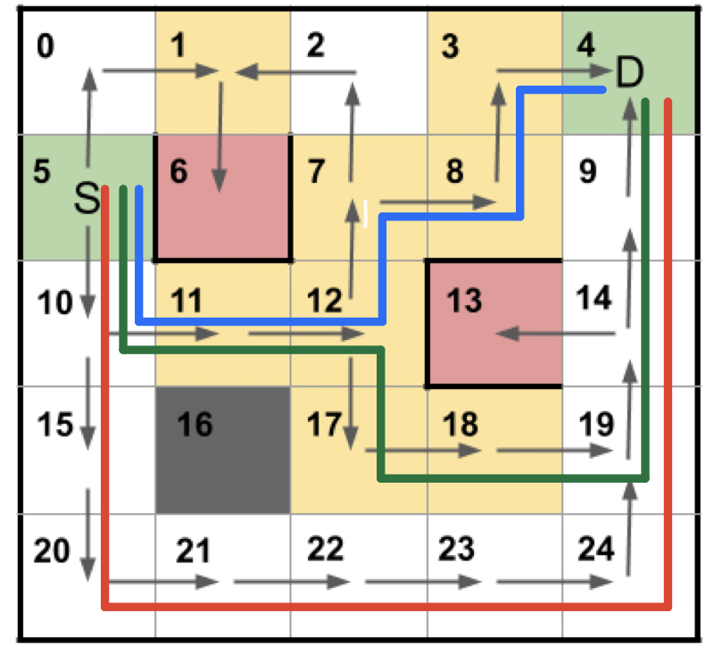

Towards Transparent Robotic Planning via Contrastive Explanations
Category: Research Timeline: Aug, 2019 - Mar, 2020 Keywords: Formal methods, xAI
Shenghui Chen, Kayla Boggess, and Lu Feng. Towards Transparent Robotic Planning via Contrastive Explanations. IEEE/RSJ International Conference on Intelligent Robots and Systems (IROS), Mar 2020
Problem
Common “black-box” AI approach gives users little understanding of how a decision is made, often leading to misunderstanding, mistrust, and misuse.
Many work in Explainable AI (XAI) focused on the building of simplified interpretable models as approximations of complex decision making functions.
However, Few start from the social science theories of explanations by first asking “what do users want?”
Contribution
- A formalized notion of contrastive explanations (selective, constrictive, responsible)
- Methods to automatically generate contrastive explanations
- A user study with 100 participants to investigate user understanding, trust and preference about contrastive explanations
Motivating example

Consider the route planning for a robot navigating in a grid map.
There are three possible routes from the start (S) to the destination (D) highlighted in different colors.
The robot may take different routes, depending on the trade-offs of different objectives
(e.g., minimizing the total route distance to destination, minimizing the risk of colliding with pedestrians or cyclists).
A naive way to explain a route is to generate a sentence for each action the robot takes at every state using a structured language template
(e.g., "We move east at grid 10."), and then concatenate these sentences following the sequence of states in the route.
However, it would be tedious if not infeasible to explain the robotic action in every state following the route,
especially for large MDP models with hundreds of thousands of states.
Therefore, we select a handful of critical states and only explain actions on those states.
In addition to explain what action is taken in a state, we also explain why the action is taken by comparing it to alternative actions in terms of constrictiveness
(e.g., "We move east at grid 10 because it leads to the most flexible future route.") and responsibility
(e.g., "We move east at grid 10 because it leads to the shortest route.").
Contrastive Explanation
In this paper, we present methods to compute contrastive explanations with three key factors
(selectiveness, constrictiveness and responsibility) for robotic planning based on Markov decision processes,
drawing on insights from the social sciences.
- Seletiveness
we define the notion of critical states in an MDP model and only explain actions in those states. Intuitively, a critical state is where the choice of actions would greatly affect the MDP policies and their performance. - Constrictiveness
In social sciences, a decision is said to be more "constrictive" if choosing it causes less possible future decisions. In this paper, we interpret constrictiveness as a measurement of how much an action would affect the flexibility in terms of the number of critical decision points left in the future route. Intuitively, more decision points lead to more flexibility for the robot to reroute, hence it is considered less constrictive and is preferred as time passes. - Responsiblity
In social sciences, an action is said to be more "responsible" if it changes the outcome more by removing that action from the current chosen path. Humans tend to be more interested in actions that hold a higher responsibility as it measures how much influence an action has over the final outcome. In this paper, we interpret responsibility as the measurement of an action's relative impact on the MDP property value compared with other actions enabled in the same state.
Generated explanations
Multiple performance properties are checked in PRISM model checker
User study
Experiments
- 100 participants on Amazon Mechanical Turk
- Independent: route presented and explanation type
- Dependent: understanding, trust, preference, time
- Hypothesis: contrastive explanation will increase understanding, trust, and be preferred by users
Conclusions
- Users understand responsibility-based and constrictive-based explanation more than their naive counterparts;
- Contrastive explanations can reduce the average time a user spent (cognitive burden);
- Users trust contrastive explanations relatively well;
- Users show a diverse set of preferences regarding explanations.